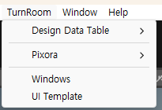

Tracefolio REPORTS & ISSUES
Tracefolio REPORTS & ISSUESUnity 상단 TurnRoom 메뉴에 두 제품 진입점 통합
완료상단 TurnRoom 아래에 Design Data Table·Pixora·Windows·UI Template을 모았습니다. 기존 메뉴·단축키와 같은 메서드에 연결되며 실제 표시와 12개 명령을 검증했습니다.
작업 결과
메뉴 구현·실제 화면 확인·12개 명령과 기존 메뉴 호환 검사·푸시를 완료했습니다.
변경 내용
적용 내용
제품별 MenuItem은 각 제품 어셈블리에 두었습니다. 설치하지 않은 제품을 위한 공통 강제 의존성을 만들지 않습니다. DataTable의 데이터·파일 열기·설정·문서, Pixora의 Studio·새 창·복제·복원·예제·설정, 공통 Windows·UI Template을 배치했습니다. 기존 Window/Tools 경로와 단축키는 같은 메서드의 별칭으로 유지했습니다. 두 제품의 아홉 언어 가이드와 README를 갱신했습니다.
검증
실제 Unity 상단 메뉴를 열어 두 제품 그룹과 공통 항목을 확인했습니다. 컴파일된 12개 명령이 각각 유일하고 기존 경로와 같은 메서드에 연결되는 24개 검사를 통과했습니다. 포커스 검사와 합쳐 38개입니다. Pixora의 아홉 가이드·54개 장·54개 코드 예제와 언어 이동 검사도 통과했습니다.

실제 메뉴 영역만 새로 캡처했습니다. 205×140, PNG 4,013바이트 → 무손실 WebP 2,704바이트, 원본과 픽셀 일치를 확인했습니다. 재구성한 메뉴 그림이 아닙니다.
남은 사항
기존 DataTable 전체 가이드 화면 캡처/소스 해시 검사는 미갱신 206건이 남아 실패합니다. 이번 실제 메뉴 이미지는 새로 캡처했으며, 기존 캡처를 새 검증으로 표시하지 않았습니다. 다른 운영체제 및 모든 언어의 실제 화면 배치는 별도 검증이 필요합니다.
작업 시간
- 제안 시간: 공동 작업 최초 예상 20–40분. 메뉴 요청은 진행 중 추가됐습니다.
- 실제로 완료된 시간: 공동 작업 57분 50초. 시작 2026-10-30 02:40:43 KST, 구현·검증·프로젝트 푸시 완료 2026-10-30 03:38:33 KST. 보고서 생성·배포 시간은 별도이며 최종 채팅에 전체 소요 시간을 기록합니다.
- XERJ: 사용 — XERJ의 OnLostFocus 후보로 창 관련 소스를 확인했습니다. 메뉴 속성은 rg와 실제 컴파일 메타데이터 검사로 대조했습니다.